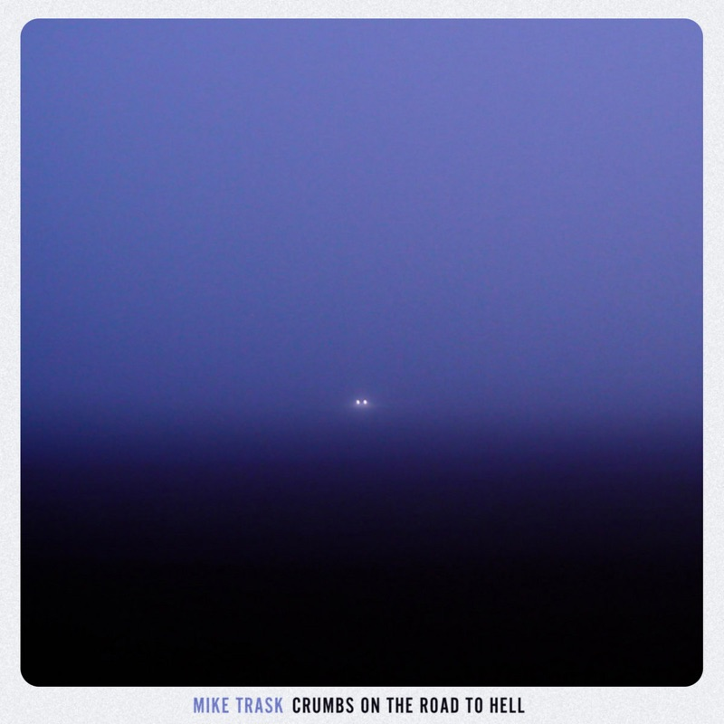

NEW EP · OUT OCTOBER 31
CRUMBS ON THE ROAD TO HELL
If you like old drum machines, scrappy storytelling and vintage electric guitars, Mike Trask's Crumbs on the Road to Hell is for you. It's available everywhere Saturday October 31st.
TOUR DATES
Stay Tuned!
With his inimitable vocal style and raucous live shows, Mike Trask has become a staple of the east coast music community.
Raised on a healthy dose of country, blues, and folk music, Trask's songwriting deconstructs traditional genre conventions to reshape the familiar into something extraordinary.
FOR BOOKINGS OR PRODUCER INQUIRIES
INFO@MIKETRASK.CA